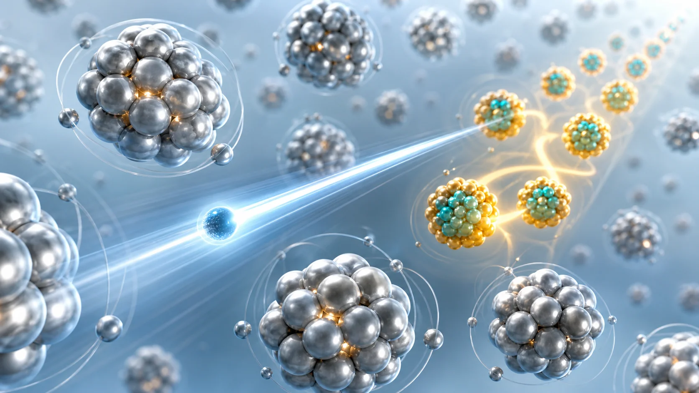
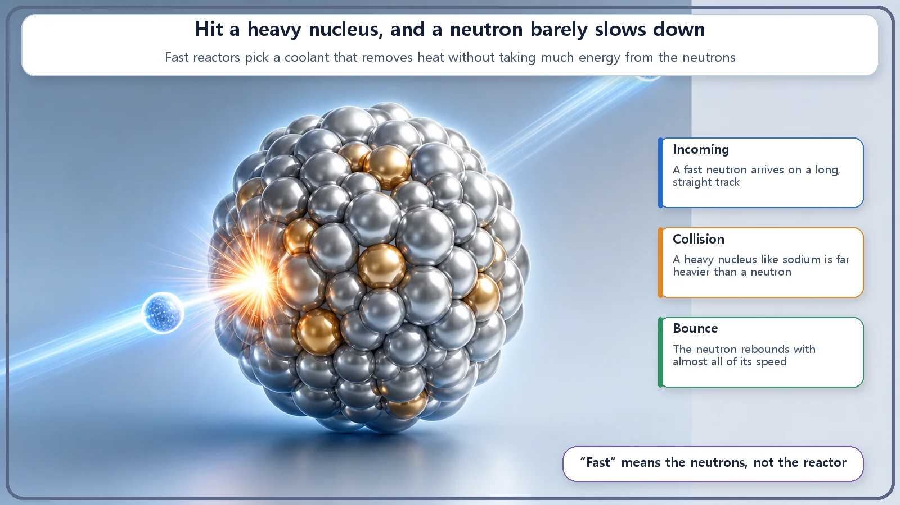
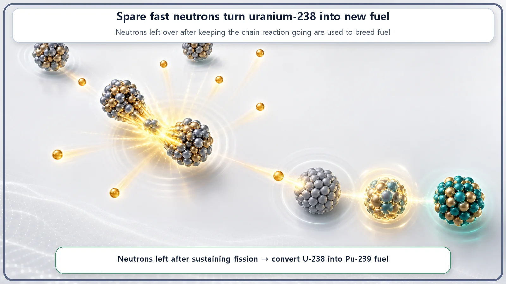

Reactor Types & Plant Systems · 180
The Reactor That Refuses to Hit the Brakes — Why Fast Reactors Do Without a Moderator
Slow neutrons make fission easy, but fast neutrons leave more spares behind, and a fast reactor trades the first for the second.

A fast reactor deliberately does not slow its neutrons down, so it uses no moderator and cools with a heavy coolant such as sodium instead of water. It gives up the easy fission that slow neutrons provide in exchange for spare neutrons, which can turn uranium-238 into new plutonium-239 fuel and burn long-lived materials.
Most reactor designers work hard to make neutrons slow. The familiar nuclear power plant, the light water reactor, fills its core with water precisely to knock the neutrons' speed way down. But there is a reactor that goes the other way. It doesn't bother slowing its neutrons at all and uses them at the high speed they're born with. That's the fast reactor. Everyone else hits the brakes, and this one deliberately doesn't. Why? Let's look at this contrarian choice.
First: why slow neutrons down at all?
Let's start backwards. To see why skipping the slowdown is such an odd choice, we first need to know why most reactors go to the trouble.
When fission happens, neutrons fly out at very high speed. Left that fast, they rarely manage to hit uranium-235, the common fuel. Slow them down a lot, and their chance of striking uranium-235 and causing fission shoots up. Why? It's like catching a ball: a slowly rolling ball is easy to grab, while a fast one whizzing past is easy to miss. A slow neutron lingers near the nucleus longer, so from the nucleus's point of view it becomes "a big, easy target." In fact, the chance that uranium-235 splits when hit is several hundred times greater for slow neutrons than for fast ones.
So reactor designers put a material in the core that cuts the neutrons' speed. That "brake" is the moderator: water, graphite, heavy water and the like. Thanks to the moderator, a chain reaction can be kept going even with low-enriched uranium, fuel in which the fissionable material isn't very concentrated. Moderation is, in effect, a lever that keeps the fire alive with less fuel.
Braking has a trick: hit something light
There's some fun physics hiding here. To slow a neutron down, you can't just let it hit anything. It loses a lot of speed only when it hits a partner of about its own mass.
Think of billiards. When a rolling billiard ball strikes an identical ball head-on, it hands over nearly all its speed and practically stops dead. But when a light ping-pong ball hits a heavy bowling ball, the bowling ball doesn't budge, and the ping-pong ball just bounces off, still zipping along. It hardly loses any speed.
Neutrons behave the same way. A neutron is a very light particle, so it loses a big chunk of speed in one go only when it hits a light nucleus. That's why moderators use the lightest atom there is, hydrogen (found in water), or other light atoms such as carbon (graphite). Hydrogen weighs almost exactly the same as a neutron, so a neutron slows noticeably after just a few collisions. But when a neutron hits a heavy nucleus such as uranium or sodium, it simply bounces off like a ping-pong ball off a bowling ball, and barely slows down.

Knowing this unlocks the fast reactor's first secret: why it uses sodium, a heavy liquid metal (or lead), instead of water as its coolant. Water is full of hydrogen, so even a little of it slows neutrons sharply. For a reactor that wants to keep its neutrons fast, that's the worst possible choice. So it picks a heavy coolant that removes heat but hardly slows the neutrons. Cooling without moderating: that clever switch is where fast reactor design begins.
So what is worth giving up the brakes for?
At this point a question arises. If slow neutrons cause fission so well, why throw that advantage away and insist on fast neutrons? Isn't that a losing deal?
The key is spare neutrons. Fast neutrons are a small target and have a harder time causing fission, but once they do, especially when splitting plutonium-239, each fission releases more spare neutrons than it would with slow neutrons. After using up the one neutron needed to keep the chain reaction going, there are plenty left over.
With these extra neutrons, a fast reactor does something remarkable. Uranium-238 doesn't fission easily on its own. It makes up most of natural uranium yet normally sits on the bench as fuel, like a perennial substitute who rarely gets into the game. But when a spare neutron from a fast reactor is absorbed by uranium-238, the uranium-238 turns into plutonium-239, which fissions readily. In other words, the reactor makes new fuel while it burns fuel. Done well, it can even make more fuel than it consumes. That's why fast reactors have long been called fast breeder reactors.

Spare neutrons have another use. Ordinary reactors build up certain long-lived radioactive materials (transuranic elements) that hardly burn and just pile up as a headache. Fast neutrons can split these too, burning them away. That's why research into reducing long-lived waste places hopes on fast reactors.
Nothing is free: the price a fast reactor pays
Of course, there's no free lunch. Giving up the brakes comes at a price.
Remember that fast neutrons are a small target? To sustain a chain reaction with that small target, the core has to be packed with fissionable material much more densely and richly. Unlike thermal reactors, which run comfortably on low-enriched fuel, a fast reactor needs more concentrated fuel. And because it can't use water, it must handle a special coolant such as sodium, so its systems are designed differently and are more demanding. In exchange for paying these costs, a fast reactor gains the potential to use resources far more efficiently and to reduce waste. In the end it's a design trade-off that comes down to what you value more.
Don't get these wrong
One misunderstanding comes straight from the name. The "fast" in fast reactor refers to the speed of the neutrons. It absolutely does not mean the reactor runs faster, reacts more violently or is more dangerous. It simply means the neutrons flying around the core are kept fast, nothing more.
Also, "using little moderator" really means "deliberately using no moderator." A fast reactor intentionally leaves out materials that slow neutrons. The coolant and core structures do slow neutrons very slightly, so it isn't a perfect zero; think of it as keeping the neutrons as fast as possible. Finally, "breeding" does not mean "free, unlimited energy." It greatly raises how much use we get from uranium-238, a resource that was sitting idle; energy doesn't magically appear from nowhere.
Today's summary
- A moderator slows the fast neutrons released by fission. Most reactors use one because slow neutrons are several hundred times more likely to hit uranium-235 and cause fission.
- Neutrons slow down well only when they hit light nuclei of similar mass (hydrogen, carbon) and barely slow down when they hit heavy nuclei, which is why fast reactors use heavy sodium instead of water as coolant.
- A fast reactor gives up "easy fission" to gain the spare neutrons that fast fission releases, using them to turn uranium-238 into fissile plutonium-239 (breeding) and to burn long-lived materials that don't burn well otherwise.
- The price is more concentrated fuel and a special coolant instead of water, a design trade-off for better resource use and less waste.
- "Fast" refers only to neutron speed, not to a more dangerous reactor, and breeding means better use of resources, not unlimited energy.